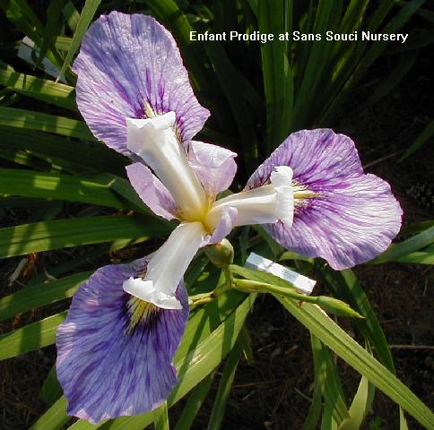
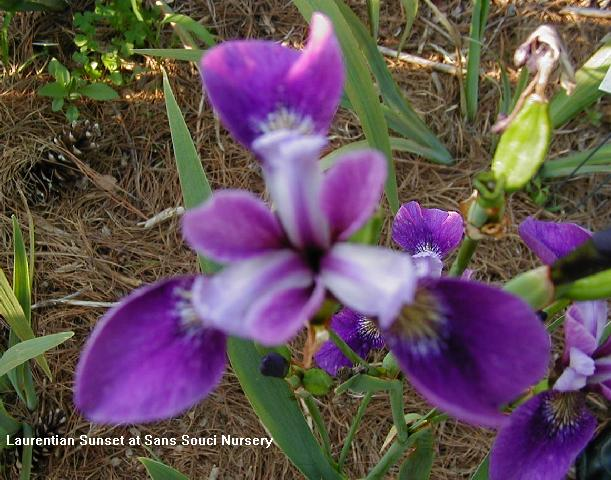

|
|
The flowers are large and tend to be reminiscent of their versicolor heritage and have stately vigorous foliage with a leaf mid-stripe from their Japanese parentage. They lend themselves well to the back of the perennial border and can be planted in both dry & boggy areas. Plants added to our garden in mid-June of 2000 more than doubled in size in one year and the bloom was spectacular. They have held up well to a long summer drought without supplemental watering.
Cllick here for
Legend for Iris Terminology

Enfant Prodige
Versata (Huber 1993) tall (about 40 inches) standards lilac with white
stylearms that can be seen clear across the garden; falls are violet blue; deep
violet halo around deep yellow signal; vigorous grower

Laurentian Sunset
Versata (Huber 1998)short (28 inches- tends
to be much taller in our garden) standards purplish violet with darker
stylearms bordered pink and white; falls are purple violet; stunning blooms
tend to give a reddish appearance in the garden; floriferous
plants
|
Home Pages |
About Us |
Japanese | Rebloomers | Louisianas Crested Iris | Siberians | Versatas | Spuria Iris | Others | Miscellaneous Weather in Your Area All material on our website copyright © 2012 Bonnie Dalzell. The duplication, reproduction, and transferral of any of this material without written license is expressly prohibited. Wesite and Photography by Bonnie Dalzell BATW Graphics |
|
|

Hosted at QWK.net |

Best viewed with any browser |